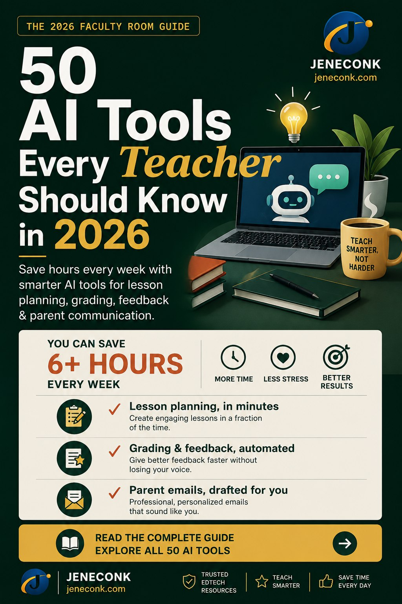
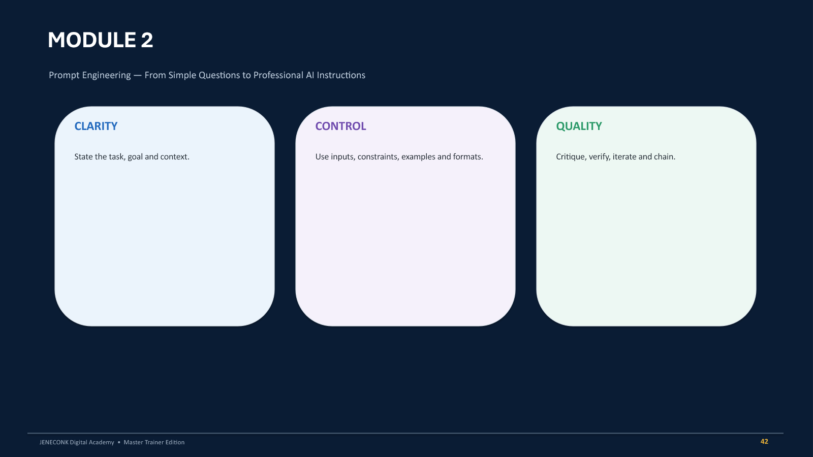

Prepare stronger lessons and reports with less guesswork.
Use clear guides for lesson notes, schemes, records of work, assessments, and report comments that teachers can trust and adapt.
Open teaching hubResource center
Find clear help for lesson planning, AI adoption, Excel reporting, cybersecurity, coding, business documents, and everyday technology decisions.
Use clear guides for lesson notes, schemes, records of work, assessments, and report comments that teachers can trust and adapt.
Open teaching hubLearn practical ways to draft, review, improve, and apply AI outputs across classrooms, offices, documents, and daily workflows.
Explore AI trainingImprove reports, CBT planning, academic records, teacher productivity, and digital adoption without losing professional review.
View education pagesGet practical support for proposals, invoices, letters, policies, business plans, templates, and everyday office communication.
Open business hubBuild confidence with formulas, dashboards, data cleaning, school records, business reports, and spreadsheet habits that reduce errors.
View Excel trainingPlan practical technology support for schools, teams, offices, training centers, and organizations that need dependable tools.
Explore ICTFeatured guides
Choose a guide, solve the immediate problem, then continue into the JENECONK tool or product that helps you move faster.

Compare tools for lesson planning, grading, worksheets, assessments, parent communication, reports, and records. See free-access notes, pricing guidance, a class-schedule view, and a teacher report card.
Explore all 50 AI tools
Work through every part of a strong lesson note with 13 practical steps, measurable-objective examples, teacher and learner activities, a complete SS1 Mathematics note, format comparisons, common mistakes, an AI review guide, and a final quality checklist.
Read the complete lesson-note guideMap each week with topics, objectives, resources, activities, and assessment direction.
Read guideBalance subjects, teachers, periods, breaks, and class needs with fewer clashes.
Read guideDesign fair classroom checks that reveal progress before exam week arrives.
Read guideBring AI into planning, reports, visuals, and administration with clear human review.
Read guidePrepare cleaner invoices, proposals, letters, policies, and business drafts.
Read guideCreate a polished registration form, test it properly, and share it with confidence.
Read guideImprove attendance, results, fees, class records, and summaries without spreadsheet chaos.
Read guideSee how teacher-reviewed AI drafts compare with traditional lesson preparation.
CompareKnow when a writing tool is enough and when a school workflow saves more time.
CompareChoose school software around real teaching, reporting, support, and operations.
Read guidePrepare age-appropriate lessons, activities, reports, and class documentation faster.
View pageSupport subject teachers with planning, questions, revision, diagrams, and reports.
View pageImprove consistency, parent-ready reporting, and teacher productivity across the school.
View pagePlan readiness, training, support, privacy, and rollout for Lagos, Abuja, Port Harcourt, Kano, Enugu, Yobe State and Damaturu.
Read location guidePrepare invoices, proposals, templates, reports, and business documents with less delay.
View pageStrengthen proposals, reports, policies, training records, and data workflows.
View pageUse quick calculators and utilities when you need a simple answer immediately.
Open toolsExplore Edu Suite, lesson notes, report comments, assessments, and school support.
Open educationExplore structured English learning and IELTS Academic preparation through diagnostics, targeted practice, progress tracking, and human feedback.
Explore JEMSDigital skills articles
Learn the practical moves behind AI, Excel, cybersecurity, coding, data analysis, and modern office productivity.

Understand AI and automation, use the eight prompting layers, apply the JENECONK framework, practise ten professional labs, and download the complete 118-slide trainer deck.
Start the AI prompting guide
Install PostgreSQL and DBeaver, build the NovaMart database, write real queries, complete four assignments, reveal worked answers, and download the full 50-slide workbook.
Start learning SQL
Find packet counts and duration, understand the three panes, use reliable display filters, interpret common protocols, complete six labs, and write an evidence-based analysis report.
Start the Wireshark guideBuild curriculum-aligned lessons with clear outcomes, differentiation, assessment, regional terminology, and teacher review.
Read international guideTurn verified evidence into specific progress comments and next steps without exposing learner information.
Read international guidePrepare accessible materials and differentiated activities while keeping support decisions professional and human-led.
Read international guideUse controlled workflows for meetings, communications, policy work, planning, procurement, and review.
Read international guideCover approved use, privacy, safeguarding, assessment, procurement, accountability, and incident response.
Open policy frameworkTrack products, stock movements, reorder alerts, suppliers, inventory value, and physical-count variances.
Open Excel guideMonitor issued, paid, part-paid, disputed, overdue, and outstanding invoices with a controlled weekly process.
Open Excel guidePrepare rubrics and feedback structures while keeping grading fair, explainable, private, and teacher-led.
Read international guideCompare AI tools for lesson planning, grading, worksheets, assessments, parent communication, reports, and records.
Read articleUse the CLASS framework and six copy-ready prompts for lessons, assessments, reports, parent messages, and teaching visuals.
Open prompt guideUse ten practical formulas to track sales, stock, overdue invoices, profit, prices, and monthly performance.
Open formula guide